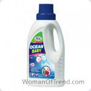
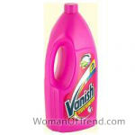
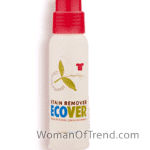
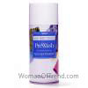
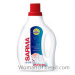
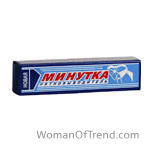
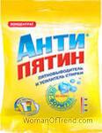
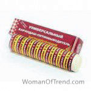
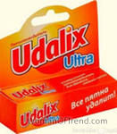

Nhiều bà nội trợ phải đối mặt với vấn đề vết bẩn trên quần áo, khăn bếp, vải lanh. Đặc biệt là sự xúc phạm có thể trở thành nếu vết bẩn không được loại bỏ khỏi đường hoặc một thứ yêu thích. Nhưng đừng tuyệt vọng. Một số lượng lớn các chất tẩy vết bẩn hiện đang được cung cấp. Cũng đọc về các loại vết bẩn và phương pháp loại bỏ vết bẩn .
nội dung của bài viết :
- xem xét các loại bỏ vết bẩn quần áo tốt nhất. Đánh giá nội trợ
- khắc phục mọi vết bẩn Frau Schmidt
- Vanish để loại bỏ vết giặt màu
- Ecover chống pata
- Stain Amway Pre Wash
- Biện pháp đã thử Active Sarmaua
- Vết bẩn phút
- Phương tiện loại bỏ vết bẩn - Antipyatin
- pata Edelstar
- để loại bỏ vết bẩn của Udalix Ultra
xem xét các loại bỏ vết bẩn quần áo tốt nhất. Đánh giá yêu thương
Bài viết này sẽ giúp bạn tìm ra cách tẩy vết bẩn nào là tốt nhất và hiệu quả nhất. Để rõ ràng trong ngoặc đơn, một ước tính trung bình về tiền của các đồng nghiệp được viết. Biện pháp khắc phục cho bất kỳ vết bẩn Frau Schmidt (5).
. Nhận xét và giá cả.
 Producție – Austria . Îndepărtează petele de grăsime, sânge, vin, ulei, fructe . Potrivit pentru lenjeria colorată și albă . Conține sapun de biliard. Nu are efect nociv asupra pielii mâinilor.
Pret: 220р .
đánh giá các bà nội trợ sử dụng chất pha loãng sơn Frau Schmidt:
Angelica:
Café đặt kem sô cô la ngay tại chỗ và sửa đổi rất nhiều tiền để rút nó, nhưng không có gì tôi thích mô tả và thành phần. Kết quả là, tôi đã tìm hiểu về loại bỏ vết bẩn này. Nó được ca ngợi như một phương thuốc tinh tế. Rằng bạn thậm chí không thể đeo găng tay. Tôi đã mua nó ngay lập tức "trong trận chiến". Anh ta đặt nó lên vết bẩn và để nó hoạt động trong 2 giờ, sau đó ném nó vào máy đánh chữ. Kết quả rất hài lòng! Không còn gì của vết bẩn. Giống như không có dấu vết - công cụ làm việc rất "dễ dàng". Sau đó, tôi không thay đổi công cụ này cho bất cứ điều gì. Nó và bit vớ trẻ em trai giặt tuyệt vời và áo sơ mi của chồng. Vì vậy, tôi thành thật có thể giới thiệu nó cho tất cả mọi người. Loại bỏ chất tẩy vết Vanish cho vải lanh màu (4,5). Nhận xét và giá cả. Promises elimina cu ușurință diverse impurități într-un timp scurt, oferind rufelor o prospețime radiantă și curățenia. Pentru expunere, se recomandă aplicarea produsului direct pe pete.
Pret: 150 fre.gospodinele
Nhận xét bằng cách sử dụng Vanish Stain Bleach:
Arina:
Tôi biến mất thái độ chung là xấu, bởi vì một số tiền dưới tên này - đó là tiền bị rò rỉ. Nhưng Vanish "cho đồ lót" ngạc nhiên thú vị. Với sự giúp đỡ của anh ấy, tôi đã loại bỏ điểm trà ra khỏi chiếc quần jean yêu thích của tôi. Và nó là trực tiếp trước khi mắt trở nên mềm hơn sau khi đặt hoặc làm một tác nhân. Và màu sắc của quần jean đã không bị ảnh hưởng. Không có điểm mở hơn trên nền chung. Trong nửa năm qua, tôi thêm một phương tiện cho mỗi lần giặt và bôi dầu mỡ trước khi cho vào thiết bị. Kết quả là ngon mỗi lần. Vì vậy, tôi hạnh phúc với điều đó!
ecover anti-pata (4,7)
 Manufacturing – Belgia. Pentru lenjeria albă și colorată .. Compoziția componentelor vegetale și minerale și a produselor petroliere. COPES cu urme de iarbă, grăsime, murdărie, sânge, etc . Produsul se descompune fără reziduuri nocive și vapori, astfel încât să nu dăuneze naturii.
Preț: 230 p .Nhận xét về Ecover Stain Bleach:
Catherine:
chỉ thích loại bỏ vết bẩn này vì nó không chứa hóa chất khủng khiếp này, có thể gây hại, đặc biệt là đối với trẻ em. Nó cũng thuận tiện khi sử dụng nhờ bàn chải, cung cấp phương tiện tiêu thụ tiết kiệm chi phí và không thể được chà bằng vải mềm để loại bỏ vết bẩn, và chỉ cần chà vết bẩn của bàn chải này. Tôi đặt nó lên vết bẩn trước khi rửa vài phút. Và không có vấn đề với vết bẩn.
Stain Amway Pre Wash (4,5)
 se descurcă cu pete de grăsime, ulei, plante medicinale et al. Este foarte ușor de utilizat. Nu este necesară expunerea pe termen lung. Țesutul este curățat imediat după pulverizarea sprayului.
Pret: 250 fre.đánh giá các bà nội trợ sử dụng để loại bỏ vết bẩn Amway Pre Wash:
Olesia:
về công cụ này, tôi đã nói với bạn tôi. Và tôi biết ơn vì điều đó! Xịt này là hoàn hảo để chống lại nhược điểm. Tất cả bạn phải làm là có một bình xịt phun trước khi rửa. Trẻ em có vết bùn, vết dầu, vết mồ hôi, gubnushki, v.v ... Và khá nhiều bóng bay này trong một thời gian dài. Bây giờ tôi không có gì trong nhà với một vết bẩn không thể giặt. Và hạnh phúc này!
Remediu SARMA spoturi active (4,5)
 Îndepărtează petele de ulei și unsoare , precum și urme de boabe și fructe, vin și ceai, sânge și mânere . Îmbunătățește calitatea spălării mașinii. Este destinat să scape de pete vechi și să se întoarcă la lucrurile colorate și albe proaspătă fostă.
Pret: 65 р.đánh giá các bà nội trợ sử dụng sơn mỏng hơn Sarmaua:
Eugene:
nó đã xảy ra tại cơ sở này ở siêu thị. Đó là giá rẻ, nhưng bằng cách nào đó "đáng tin cậy." Anh quyết định thử. Đặc biệt là từ khi con trai tôi vẽ một chiếc áo phông tốt bằng bút vài ngày trước. Tôi đã thêm sản phẩm vào máy giặt. Kết quả làm tôi ngạc nhiên - không còn gì trong bản vẽ. Trong tương lai, cô ấy phải đối mặt với vị trí nhuộm tóc cũ trên chiếc váy yêu thích của tôi. Đó chỉ là ma thuật. Tất cả khăn bếp chỉ cần tỏa sáng sạch sẽ. Trong khoảng 6 tháng tôi có phương thuốc này, nhưng tôi không thấy kết thúc. Đồng thời, chúng tôi chưa thấy công cụ này, ít nhất là như đã thông báo trên các phương tiện truyền thông. Mặc dù có thể là tốt nhất. Cá nhân từ tôi cho lời khuyên - nếu vết bẩn đã cũ, bạn nên đổ phương tiện cho nó và để nó trong vài phút, và sau đó bạn phải ném vào xe.
Stain minut (4,5)
 rãscumpãrã țesut din petele proaspete vopsea, lac, ulei, unsoare . Potrivit pentru curățarea scaunelor auto și saloanelor.
Preț: 30р .gospodinelor Recenzii folosiți vopsea subtiaza Minut:
Lydia:
Gần đây anh nhìn thấy một vết bẩn khủng khiếp trên áo khoác của mình. Những loại nguồn gốc họ không nhớ. Có lẽ ở đâu đó trong giao thông công cộng nó đã bị xóa. Nói chung, tôi quyết định mang nó đi giặt khô, nhưng mẹ tôi khuyên dùng phương thuốc này. Anh nói anh thường cứu cô. Trong thực tế, tôi đã giúp thoát khỏi nhu cầu giặt khô. Chỉ 10 phút là đủ để các đặc vụ phơi bày và nhuộm màu như không. Nhược điểm là có mùi khó chịu trong đó. Nhưng em vẫn khuyên anh.
instrument pentru îndepărtarea petelor rezistente – Antipyatin (4,5)
 Potrivit pentru îndepărtarea petelor de pe o varietate de lucruri colorate si alb . Se folosește când se înmuia murdăria înainte de spălare, se adaugă la pulberea de bază pentru armare. Când spălați hainele pentru copii, este mai bine să utilizați pulberi sigure . Produs sub formă de săpun, pulbere, pulverizare.
Pret: 20-150 р.gospodine Recenzii folosi diluanti vopsea Antipyatin:
Oksana:
Lúc đầu chúng tôi dùng nó làm xà phòng. Nó cũng giống như một chất tẩy vết bẩn. Và bây giờ họ phát hiện ra rằng bột là như nhau và nó thật tuyệt. Rốt cuộc, bột là thuận tiện hơn để sử dụng. Tôi có danh sách những vết bẩn mà loại bột này phải đối mặt - là rượu, máu, mồ hôi, dầu mỡ, cỏ, bụi bẩn. Con trai tôi luôn cho tôi cơ hội để đảm bảo Antipatina có hiệu quả.
Stain Edelstar (4,5)
 răscumpără lucruri, covoare, pardoseli, dale și plastic de diferite dificil pete , pentru care chiar și un serviciu de curățătorie chimică nu este pregătită să ia.
Pret: 100 р.gospodine Recenzii folosi diluanti vopsea Edelstar:
Marina:
anh ấy đã từng lấy cây bút chì này để bán cho tôi. Anh quyết định mua, nhất là lúc đó tôi không có gì như vậy. Sau một thời gian, tôi nhớ rằng tôi có một chiếc khăn trải bàn đẹp không hoạt động, bởi vì nó có một vài vết rượu không thể loại bỏ. Ông cũng quyết định thử đại lý này. Tôi đã làm mọi thứ đúng theo hướng dẫn và bây giờ cái bàn lại "thẳng hàng", vì vết bẩn đã biến mất.
Stain Remover Udalix Ultra (4,5)
 afacere cu multe pete dificile pe diferite țesuturi, mobilier. Puteți alege ce va fi mai convenabil pentru dvs. – spray, creion, lichid, pulbere. Nu distruge structura țesuturilor.
Pret: 15-130 р.đánh giá các bà nội trợ sử dụng chất pha loãng cho sơn Udalix Ultra:
Lydia:
Tình cờ nghe về công cụ nhân viên này. Cô đảm bảo với tôi nó rất hiệu quả. Tôi quyết định chỉ lấy một loại bột, bình xịt và bút chì từ công ty này. Vì vậy, với sự giúp đỡ của một cây bút chì, tôi đã cứu tấm thảm khỏi vết sơn và giấy dán tường từ một số loại ly hôn. Với sự trợ giúp của bình xịt, vết máu đã được loại bỏ với sự giúp đỡ của người chồng bằng da cừu. Và về bột nói chung có một danh sách rất dài, nhưng thực tế là nhiều người đã biến mất các vết bẩn "Không thể phá hủy" bằng khăn, khăn trải giường và một số quần áo. Nhưng tôi không thêm nó vào xe và ngâm quần áo trước khi giặt chúng khoảng 30 phút. Vì vậy, phương thuốc là tuyệt vời!